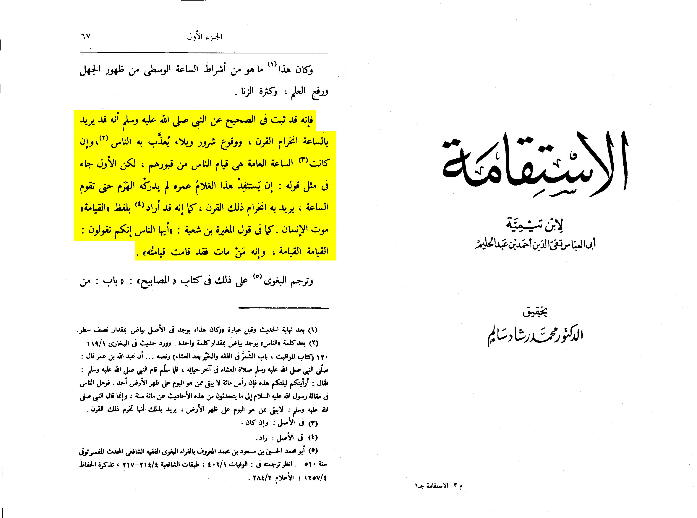
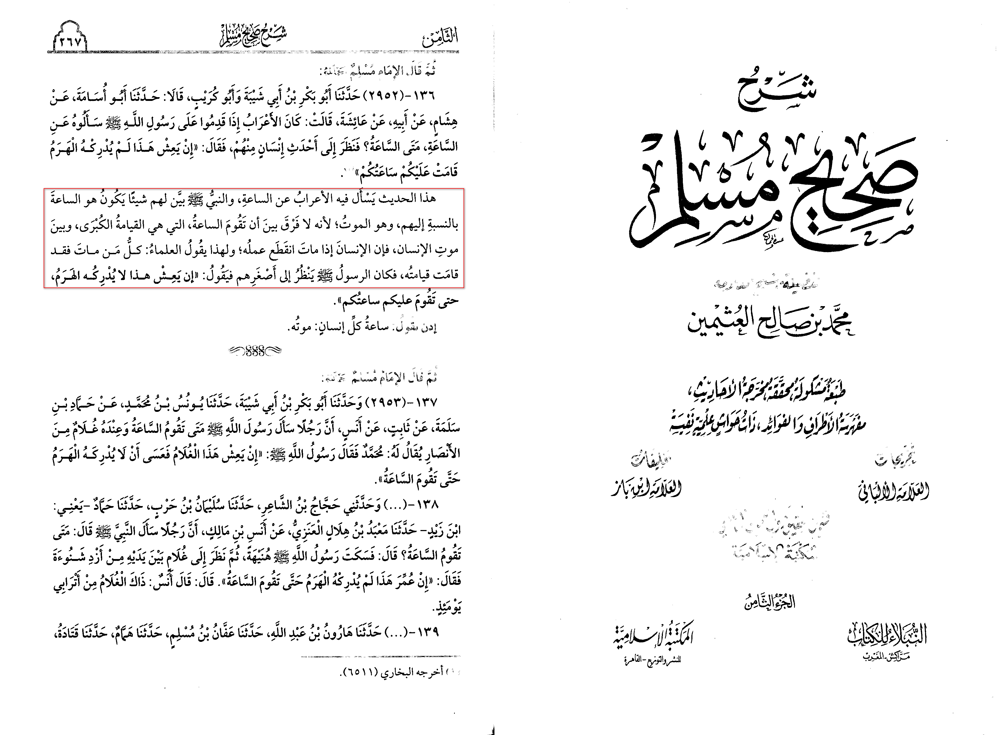

The claim is in the hadith that it means the day of judgement would come before there death
However first lets look at the sharh of the hadith
First all interpreters such Sharh Sahih muslim al-nawawi fathul bari sharh al-qurtubi they all state the
prophet meant the death of this generation because of the mixing of narrations
This could also be looked at at the hadith in muslim 2952 a and bukhari 6511
Judge Ayyad said in "Complement of the Teacher" (8/508): "If this boy lives, it may not be understood by the
pyramid until the Hour is established." The Arabs, when they come to the Messenger of Allah,
may Allah's peace and blessings be upon him, used to ask him about the Hour, when the Hour is the Hour?
He looked at the newest of them and said, "If this is lived, this is not realized by the pyramid,
your watch has stood on you." This indicates that what is meant by your watch is: your death,
and this is like the other hadith: Have you seen you this night at the head of a hundred years, there
is no one left of those who is
Sorry mistranslation I google translated it
Now critics would say they asked for the hour why would the prophet respond with this
It is because the prophet is teaching them there is no reason to ask for the final hour as he doesn’t know it
(Qūr’ān 67:25-26) and that is why In a narration in bukhari 6171 he says what have you prepared for it
Another argument is that people lived by this whole century however it isn’t precise because the prophet said
tonight meaning on from tonight
farid responds video to all of these:
https://m.youtube.com/watch?v=FWYM02LPLcE&t=143shttps://islamqa.info/en/answers/20673/the-middle-hour
Sahih Muslim 2538 a
Jabir b. 'Abdullah reported:
I heard Allah's Messenger (ﷺ) as saying this one month before his death:
You asked me about the Last Hour whereas its knowledge is with Allah.
Shaykh al-Islām Ibn Taymiyyah (d. 728 AH) writes:
"And it has been established in the Sahih (of Imam Muslim) from the Prophet (peace be upon him)
that when he said "the Hour" he could intend by that the end of the century...
The first has come similar to his statement, "If this boy reaches old age, then the Hour will come".
By this, he meant the end of the century just as he intended by the use of the word "Qiyamah" (The Resurrection)
the death of a person, as found in the statement of Mughirah Ibn Shu'bah, "Oh people!
You say that the Resurrection has come. When a person dies, then that is when his Qiyamah has come."
📖 {Al-Istiqamah | 78}

Muḥammad ibn Ṣāliḥ al-Uthaymīn (d. 1421 AH) states on this hadith:
"In this Hadith, the bedouins asked him about the Hour, so the Prophet (peace be upon him) made clear to them that
"the Hour" was death by attributing that to them. He did not differentiate between the Hour, which is referring
to the Greater Resurrection (where everyone is brought back to life) and the death of a person. When a person dies,
his deeds come to an end, and because of this some scholars said that anyone who dies, their Qiyamah has come to them,
and so [for this reason] the Messenger (peace be upon him) looked to the youngest one of them and said,
"If he lives he would not grow very old that he would find your Last Hour coming to you"."
📖 {Sharh Sahih Muslim | 8/267}
